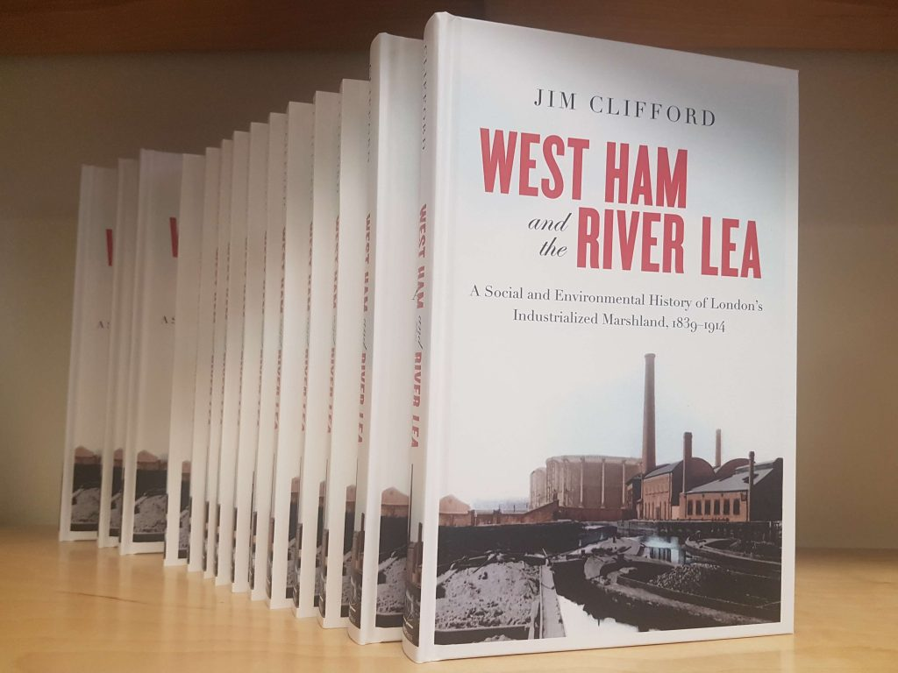

Here is the description from the press:During the nineteenth century, London’s population grew by more than five million as people flocked from the countryside to the city to take up jobs in shops and factories. In West Ham and the River Lea, Jim Clifford explores the growth of London’s most populous independent suburb and the degradation of its second largest river, bringing to light the consequences of these developments on social democracy and urban politics in Greater London. Drawing on Ordnance Surveys and archival materials, Jim Clifford uses historical geographic information systems to map the migration of Greater London’s industry into West Ham’s marshlands and reveals the consequences for the working-class people who lived among the factories. He argues that an unstable and unhealthy environment fuelled protest and political transformation. Poverty, pollution, water shortages, infectious disease, floods, and an unemployment crisis led the public to demand new forms of government intervention and provided an opening for new urban politics to emerge. By exploring the intersection of pollution, poverty, and instability, Clifford establishes the importance of the urban environment in the development of social democracy in Greater London at the turn of the twentieth century.
This book will be of interest to scholars and students of London, the environment, and the history of political and social movements, as well as those interested in precursors to modern urban environmental politics.